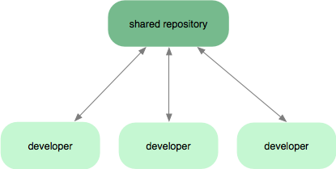

Your browser doesn't support the features required by impress.js, so you are presented with a simplified version of this presentation.
For the best experience please use the latest Chrome, Safari or Firefox browser.
这是一个使用 impress.js
制作的web页面PPT
仅支持PC端打开
好的，现在你可以按下 空格 或者 上下按键 进行操控
123，走~
哇哦！动了动了
有没有很酷，是不是觉得白色的模块背景太单调了？
不要担心，我们继续~
-- DuYangSir
好吧，没有背景了
看到大半个全局了吧，往右边看看
那一叠3D效果的展示文稿
他们会是怎样的效果咧？
键盘敲起来
123，走~
是不是越来越酷了？继续走起~


扑面而来的痛快感，有没有勾起你的回忆？

这种3D的既视感的web PPT，不需要安装任何软件~

也不需要考虑各种版本问题~

你不再需要拿着U盘到处跑

总之：
- 1、有网的时候，你可以上传到自己的服务器，直接打开浏览器展示
- 2、没有网的时候你才需要拷贝到电脑上直接点击预览
- 3、重点就是第一条，既视感的云展示
现在是简介时间：
impress.js是国外一位开发者受Prezi启发，采用CSS3与JavaScript语言完成的一个可供开发者使用的用户界面框架（presentation framework）。Prezi是一个颠覆性的在线演示工具，允许用户在不使用传统PowerPoint式幻灯片的情况下，创建更精彩的“富视觉”内容演示文档。现在普通开发者可以利用impress.js自己开发出类似效果的演示文档，但性能比基于Flash的Prezi更优。其功能包括画布的无限旋转与缩放，任意角度放置任意大小的文字，CSS3 3D效果支持等。同时，也支持传统PowerPoint形式的幻灯演示。
impress.js是基于webkit浏览器（Chrome、Safari）开发，在其他基于非webkit引擎，但支持CSS3 3D效果转换的浏览器（Firefox 10、IE10）中也能正常运行，支持WebGL。同时为保证画面运行流畅，需要使用到浏览器中的硬件加速功能。另外，该框架目前还不支持任何移动浏览器。
impress.js开发者基于MIT License将源码发布在GitHub，同时还提供了效果演示。希望国内的开发者也能合理利用该框架，给大家带来更加精彩的演示文档工具。
上面三张都是废话，你可以忽略
不会真的一行一行看完了吧？
你可以：
用它做一个在线展示的简历
各种什么什么的展示
什么？怎么用？
让我们继续往下走
然而，
并不是每个人都是前端开发 ...
难道要敲代码，怎么办？
其实很简单，
你只需要记住三个字：
找
我
呀
实在编不下去了...
还有三张
还有两张
end